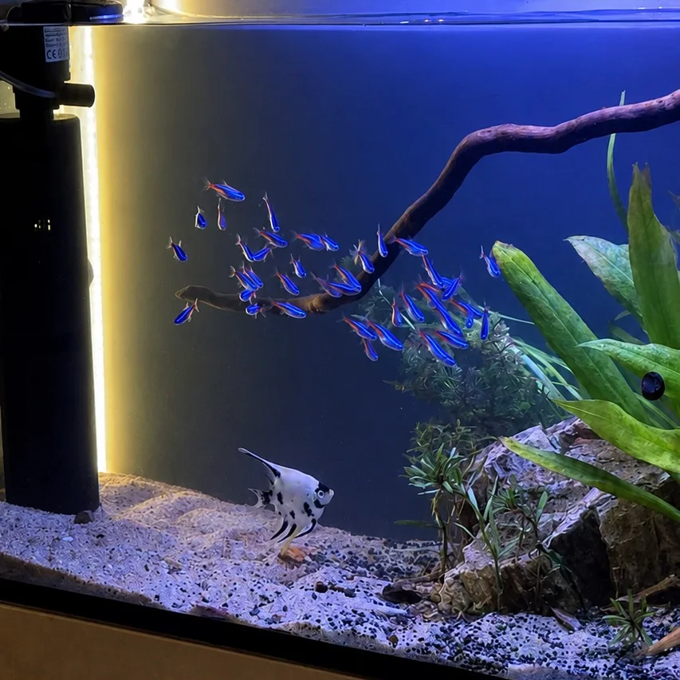

٠١استكشف الحوض
٠١استكشف الحوض نهري مزروع
امتداد أخضر
تكوين ممتد يجمع الخشب والصخور والنباتات. مساحة خضراء تتبدل تفاصيلها كلما اقتربت منها.
أعمالنا / أرشيف المشاهد
لكل حوض تكوينه.
ولكل زاوية حكاية مختلفة.

اقترب من التفاصيل
اختر المشهد الأقرب إلى فكرتك.
استعرض الصور، أو افتح ملف الحوض لتقرأ تفاصيله.
٤ مشاهد من الأرشيف
٠١استكشف الحوض نهري مزروع
تكوين ممتد يجمع الخشب والصخور والنباتات. مساحة خضراء تتبدل تفاصيلها كلما اقتربت منها.
 ٠٢استكشف الحوض
٠٢استكشف الحوض بحري مرجاني
إضاءة بحرية تمنح التكوين المرجاني حضوره. مشهد تتغير قراءته بين اللقطة الكاملة والتفاصيل الصغيرة.
 ٠٣استكشف الحوض
٠٣استكشف الحوض نهري نانو
صخور وأغصان ونباتات في تكوين مدمج. فكرة لحوض صغير، يحتفظ بتفاصيل عالم أكبر.
 ٠٤استكشف الحوض
٠٤استكشف الحوض بحري واسع
حوض واسع يجعل المشهد المائي عنصرًا أساسيًا في المساحة. زوايا متعددة تقرّبك من تفاصيله.
لقطات ومواصفات من أرشيف البوابة، لعرض الفكرة والتصميم. يُراجع نطاق التنفيذ والتجهيز لكل مشروع جديد.
المشهد القادم يبدأ منك
خذ من الصور ما يلهمك، ثم حدّد احتياجك. من تصميم حوض جديد إلى تطوير حوض موجود.
رتّب فكرة مشروعكأو جرّب المقاسات في المصمم